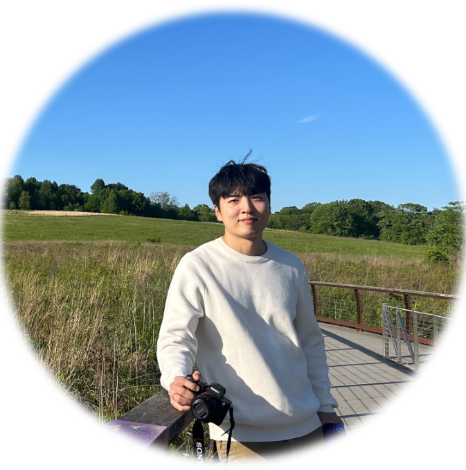

Welcome!

Welcome to my website. I'm Donghyeon Lee.
- Position
- Postdoctoral Fellow, Dept. of Radiology, University of Pennsylvania
- Ph.D.
- KAIST, 2022 (MIRLAB)
- Previously
- Postdoctoral Fellow, KU Lab, Johns Hopkins University
- Research Focus
- Photon-Counting CT · Dual-Energy CT · Material Decomposition
- leedhyeon91@gmail.com

I was born and raised in Gimhae, a small, warm city in South Korea. I earned my B.S. degree in 2016 from Hanyang University in Seoul (with two years of military service) and received my Ph.D. in 2022 and my M.S. in 2018 from MIRLAB at KAIST in Daejeon. To broaden my perspective, I moved to the United States in 2022, joining KU Lab at Johns Hopkins University. I am currently working as a postdoctoral fellow in the Department of Radiology at the University of Pennsylvania.
I do research based on my research philosophy, which say a lot about me:
- Imagine beyond the horizon
- Enjoy every moment of the journey toward my goals
- Be sincere, truthful, and respectful
My research centers on X-ray imaging technologies, with a particular focus on computed tomography (CT). During my Ph.D., I found my strong interests in spectral imaging and proposed multiple novel approaches for dual-energy CT reconstruction and material decomposition. Excitingly, one of them was adopted by a startup company and actively used in the field (News Outlet 1, News Outlet 2). At present, I'm interested in imaging technologies for photon-counting CT, a leading-edge CT modality with advanced energy-discrimination capabilities, and actively conducting interesting research in this area.